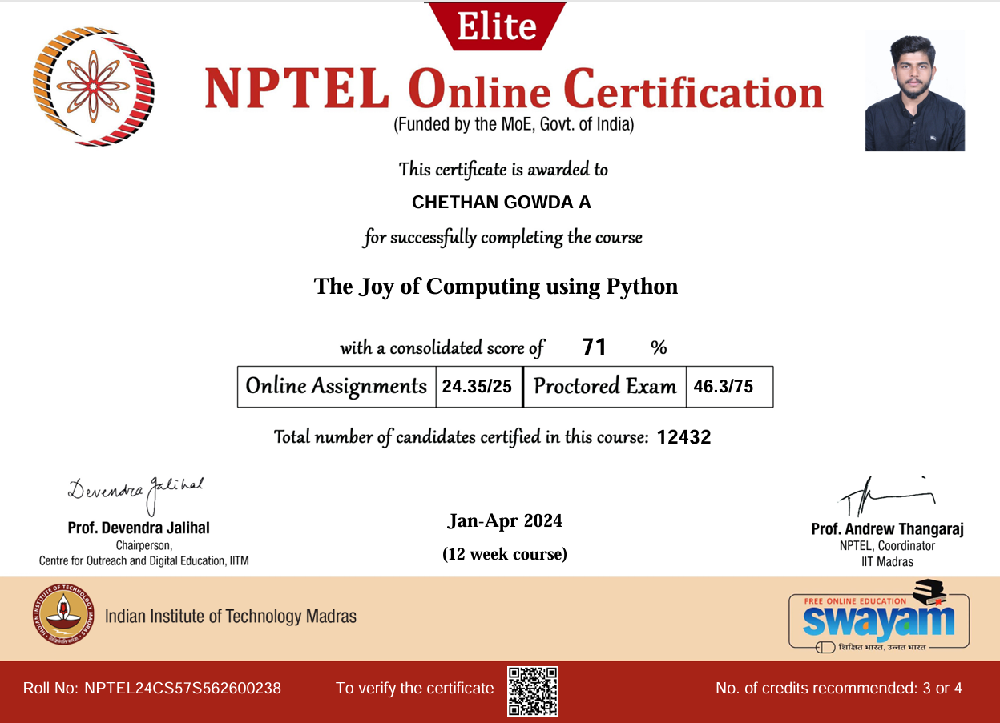
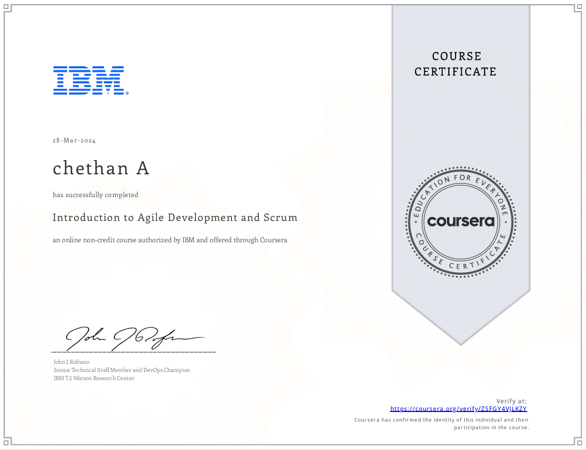
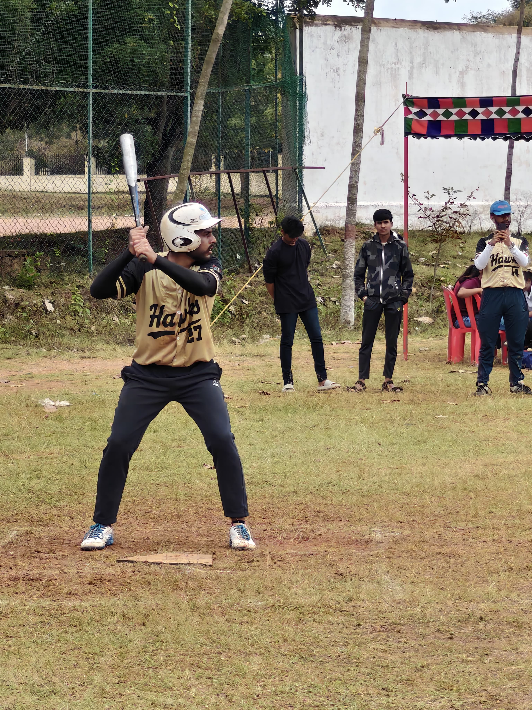
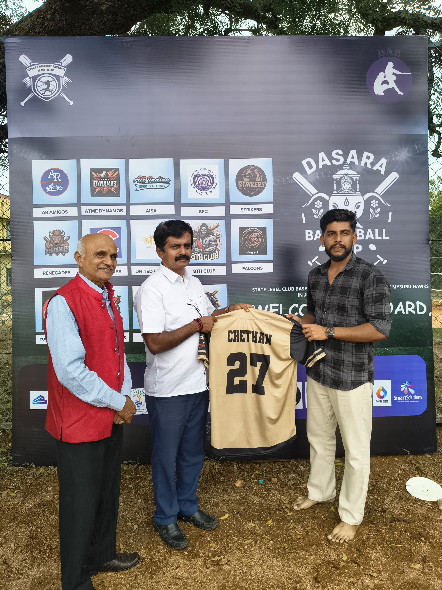
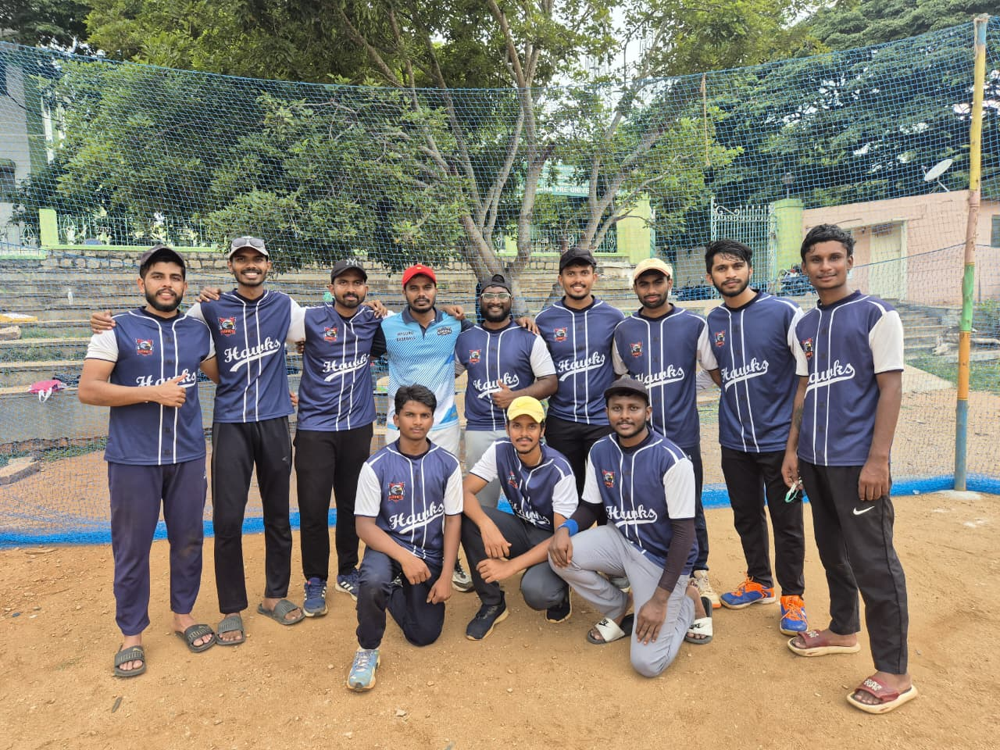
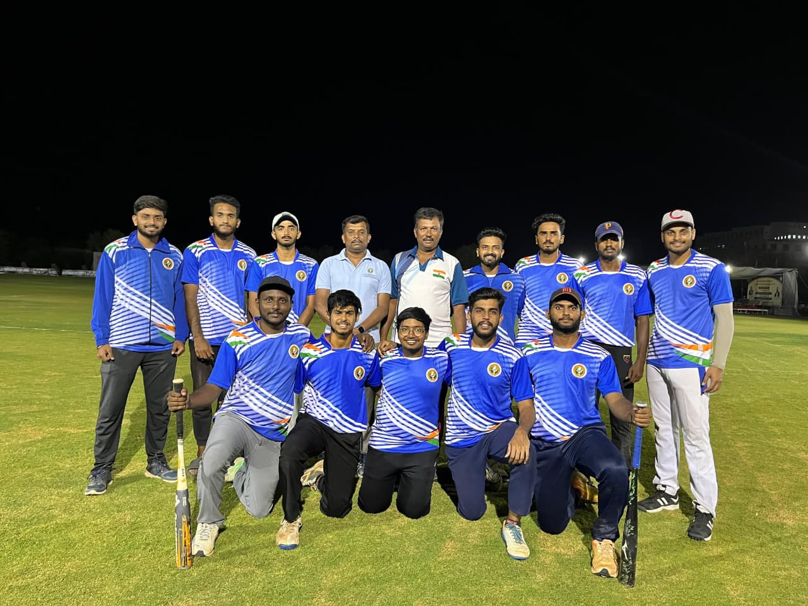

I'm deeply passionate about technology, creativity, and building solutions that make a real difference. I enjoy working on innovative projects that push boundaries and transform ideas into impactful, real-world applications. Whether it’s developing modern web solutions, exploring decentralized systems, or enhancing user experiences through thoughtful design, I’m driven by the goal of creating technology that empowers people.
I value collaboration and love connecting with individuals who share the vision of using technology for good. Every challenge I face is an opportunity to grow, learn, and contribute — and I’m excited to keep pushing forward, evolving with every project I take on.

The Joy of Computing Using Python by NPTEL

Introduction to Agile Development and Scrum




Sports have shaped who I am — a believer in discipline, teamwork, and resilience. From competing at the All India National level Baseball Tournament in Rajasthan to representing my club team, Mysuru Hawks, baseball has taught me the power of focus, passion, and consistency.
Every inning, every challenge, and every victory has molded my ability to stay calm under pressure and push beyond limits. Baseball has been more than just a sport — it’s been a training ground for leadership, strategy, and perseverance.
Alongside baseball, I’ve also engaged in various other sports, each helping me grow physically and mentally, reinforcing values of dedication and sportsmanship. These lessons continue to inspire me beyond the field — shaping the way I work, lead, and pursue excellence in every endeavor.